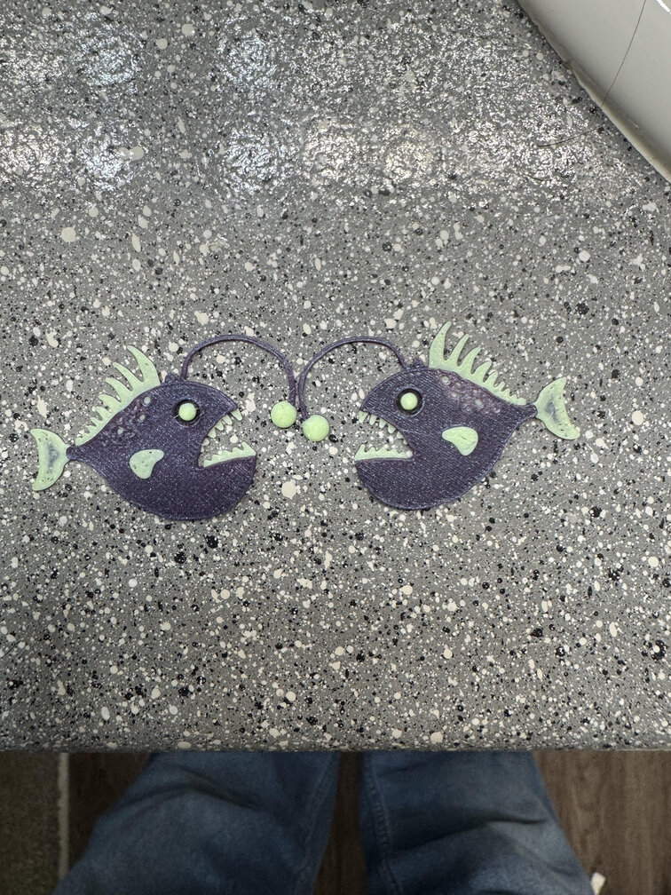

On this page I will showcase computer aided designs designed by me. I prinicpally have used CAD software, primarily Fusion 360 and Blender, to design 3D prints.
As a teenager I wanted to become an architect, so one project I am incredibly proud of is is designing a model of the Salt Lake City Temple.
Though not completely scale, or bearing every detail, I think this model is incredibly detailed in comparison to the real building.

The 3D print
is a half scale model of the CAD design and bears remarkable detail even at that scale. I have also made many other things on the software such as earings
in the shape of an angler fish for my sister, who majors in marine biology.
I am also currently engaged in a few desings that I can use to potentially 3D print and sale.